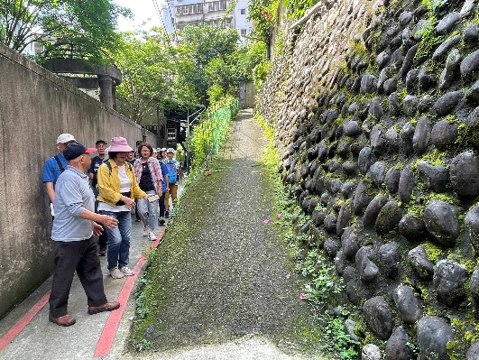
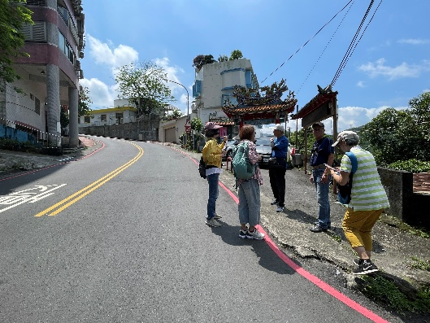
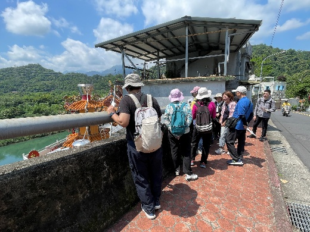
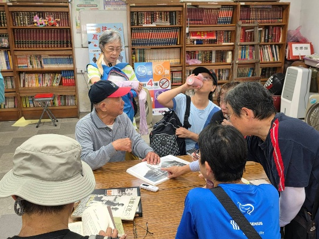

田野紀錄
把耳朵貼近地方
這一頁像走讀後的一次回望。淑美把煤礦、摩天嶺、新店溪與城市變遷寫成一段凝望，也提醒我們：風景仍在，記憶更需要被好好留下。
1150507訪談及田調記錄表-淑美心得
田調/訪查紀錄表
紀錄日期
115年05月07日 9時 至12時30分
紀錄者
王淑美
紀錄類別 （可複選）
■人物（對象名稱〆高金舜） □商店（類別） □老樹■老建築 ■自然景點 ■特色景觀 □史蹟 □其他（ ）
所在位置
地址
座標
出生年/存在年份
心得
今天是我們踏查國校里的日子。
我們穿梭在新舊夾陳的巷弄裡，尋找曾經的經濟命脈發展的蛛絲馬跡~
在翁大哥提供的攝影書冊裏，緬懷「歲月詩情」；在當地耆老的聲浪裏，猶如時空旅人，悠悠晃進山水城鄉的昔日生活風貌~
明治煤礦曾是碧潭地區知名的礦區，它的興衰起落，不僅攸關家族的興衰，也牽繫地方的繁榮與蕭條~
開採煤礦湧進的採礦員工和其家屬，即使礦場停產，也有不少人就此安身立命。
國民政府接收後，不少的軍隊進駐，軍籍人口大增。鄰近貨品集散地的新店街免不了也有了聲色需求的酒家、紅燈戶，適巧多位於街道的坡度高端，“摩天嶺”之名，竟不脛而走~
宛如新店母親河的新店溪，滋養、富庶這片土地；蜿蜒的溪流，致使生態層次豐富，卻曾因上游堰塞湖潰堤，水勢浩大洶湧，瞬間捲走一整條街上的整排屋宇，造成難以計較的災難~
也曾因颱風的豪雨，掏空臨溪的人家，房屋殘骸至今仍在溪底~
今日，寶石水色依舊閃爍，倒映的天光雲影依然浮想聯翩~但，假使新店溪淵遠流長的歲月記憶隨流水消逝，那我們將從何追尋：我們與這方天地的聯繫？
同行光影
光影也替地方作證




